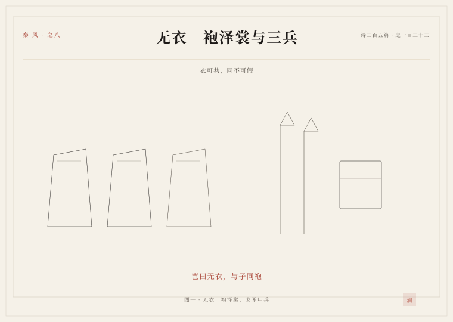
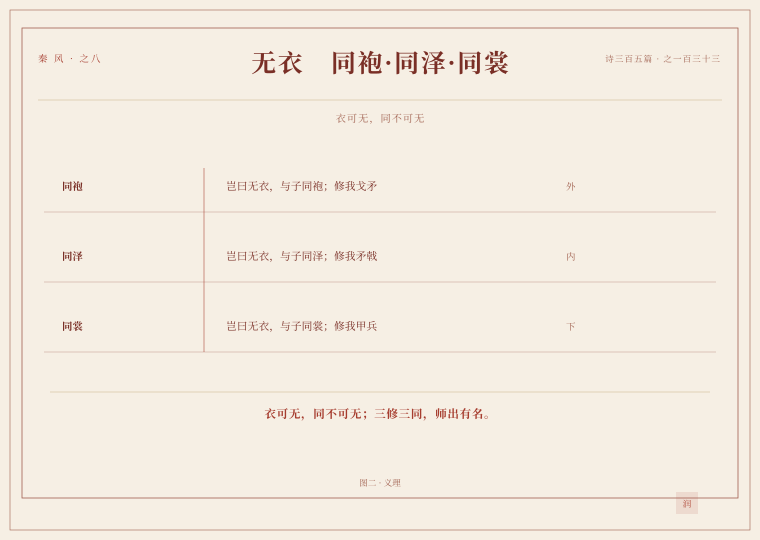

第一百三十三篇 无衣
秦风 · 之八 SJ133
朗读 · 普通话
依经文原文朗读，章次不读出；配古琴底乐，不改速、不加拖腔。全库同一音色（豆包 TTS），非播音员录制。
一 解题
诗三判：
- 谁在说：秦军士卒。三章以「岂曰无衣」起，以「与子同袍／同泽／同裳」应，以「同仇／偕作／偕行」收。
- 说什么事：三章只换衣之三层、兵器之三件、同之三态。衣可共，兵可修，仇可同；三层一齐，师才出。
- 为何编在此：承《晨风》之弃，转《渭阳》之亲；秦之末，兵戈之外还有同袍；一「同」字，是秦风的收。
《毛序》：“《无衣》，刺用兵也。秦人攻刺，用兵而不与民同欲焉。”
朱子《诗集传》（大意）：赋也。袍，襦；泽，里衣；裳，下裳；王于兴师，奉王命而兴师；戈矛、矛戟、甲兵，皆兵器；同仇，同所仇；偕作、偕行，同起、同行。
本库的看法：《无衣》是一首把「衣」写成「同」的诗。
不是无衣，是不以衣为别；同袍、同泽、同裳，把私衣变成军服；同仇、偕作、偕行，把私情变成师律。
断语：衣可无，同不可无；三修三同，师出有名。
先辨五事：「袍」是长襦，不是战袍泛称；「泽」是里衣，不是恩泽；「王于兴师」是奉王命，不是秦王兴师；「同仇」是同仇敌，不是同怨；「偕行」是同行，不是同死。
二 经文
第一章
岂曰无衣，与子同袍。
王于兴师，修我戈矛。
与子同仇。
第二章
岂曰无衣，与子同泽。
王于兴师，修我矛戟。
与子偕作。
第三章
岂曰无衣，与子同裳。
王于兴师，修我甲兵。
与子偕行。
分章：三章，章五句。
三 韵读
- 一章：衣、袍、师、矛、仇，之幽部。一句一转，声促。
- 二章：衣、泽、师、戟、作，铎部。入声收，行阵之音。
- 三章：衣、裳、师、兵、行，阳部。三章转阳，声最齐。
读法：二章以昔形今，韵随叹转；昔愈厚，今愈薄。
四 字义与名物
- 袍：长襦。泽：里衣。裳：下裳。岂曰：难道说。
- 王于兴师：奉王命兴兵。戈矛：长兵器。矛戟：矛与戟。甲兵：甲胄兵器。
- 同仇：同仇敌。偕作：同起。偕行：同行。
五 今译
难道说没有衣？与你同穿长袍。王命兴师，修好我的戈矛。与你同仇。
难道说没有衣？与你同穿里衣。王命兴师，修好我的矛戟。与你同起。
难道说没有衣？与你同穿下裳。王命兴师，修好我的甲兵。与你同行。
六 章旨
- 一章：写袍与戈矛。衣之最外，兵之最前；同袍是同在外。
- 二章：写泽与矛戟。衣之最内，兵之次；同泽是同在内。
- 三章：写裳与甲兵。衣之最下，兵之最备；同裳是同在下。
- 总收：由外而内而下的三层衣，配由前而次而备的三层兵；同字一收，私衣成军。
七 诗教
- 兴：无兴，直赋；赋同袍，正是赋同仇。
- 观：观秦之师，不在甲兵，先在「同」；甲兵可修，同不可假。
- 群：一军之人，同袍同泽同裳；衣分内外，军不分彼此。
- 怨：无怨，有励；励在「偕行」，不在「无衣」。
八 分寸与边界
- 不可把「泽」当恩泽。它是里衣；一作恩泽，同袍就成受赐。
- 不可把「王于兴师」当秦王私兵。它是奉王命；一作私兵，师出无名。
- 不可把「同仇」当同怨。它是同仇敌；一作同怨，军心就成怨气。
- 不可把此诗只读作战友诗。毛序有刺；本库取同袍之美，不掩用兵之刺。
- 不可把三章读作重复。衣三层、兵三件、同三态；一拉平，军阵就成叠句。
九 存疑
- 诗旨：毛序刺用兵，民不与同欲；朱子以为秦人相勉。本库两存：美其同，刺其战。
- 「泽」：毛传「润泽也」？朱子「里衣也」。从里衣。
- 「王于兴师」：一说王为周王；一说王为秦王。从周王命。
- 「同仇」：一说同仇为「同匹」；从同仇敌。
十 跨典
- 《诗经·秦风·小戎》（SJ128）：前篇器与念，此篇袍与同；一私一公。
- 《尚书·秦誓》：“同力于厥疆土。”——同力；此诗「同袍」正同力之始。
- 《孙子·计》：“上下同欲者胜。”——同欲；此诗三同，正是同欲。
十一 双卡与图
六对：
| 袍（长襦） |
袍（战袍） |
| 泽（里衣） |
泽（恩泽） |
| 王于兴师（王命） |
王于兴师（秦王） |
| 同仇（同敌） |
同仇（同怨） |
| 偕行（同行） |
偕行（同死） |
| 岂曰（反问） |
岂曰（真无） |

图一 · 无衣 袍泽裳、戈矛甲兵

图二 · 无衣 同袍、同泽、同裳
读图三处：
- 三衣：图一袍、泽、裳三件并列，领、袖、下摆各别；衣三层，由外而内而下。
- 三兵：图一戈、矛、戟三器，甲一领；兵三件，由前而次而备。
- 三同：图二「同袍／同泽／同裳」三列，末列朱线收「偕行」；衣可共，同不可假。
断语：衣可无，同不可无；三修三同，师出有名。